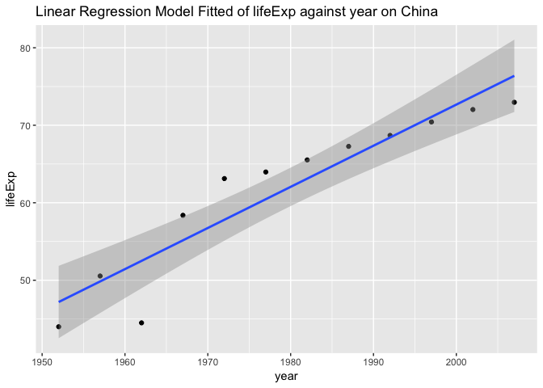
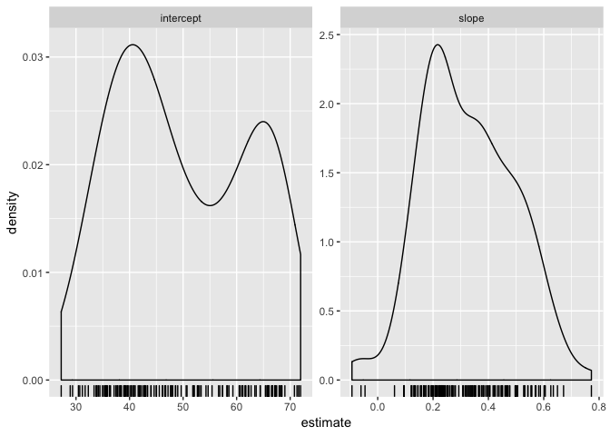
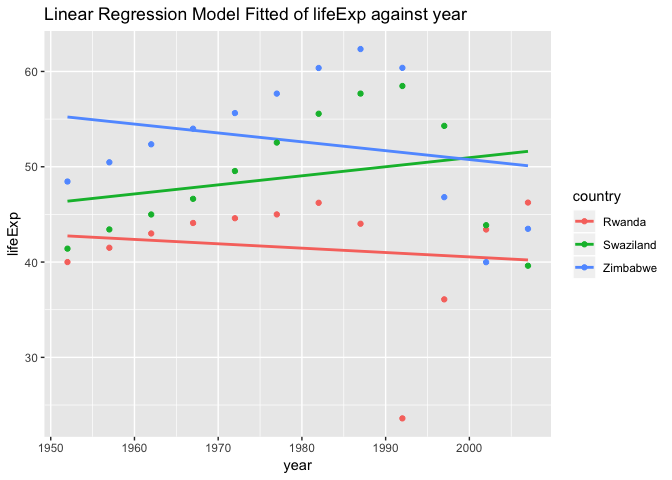
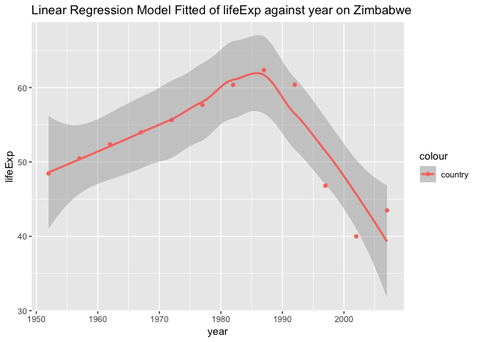

library(gapminder)
library(tidyverse)## ── Attaching packages ─────────────────────────────────────── tidyverse 1.2.1 ──## ✔ ggplot2 3.0.0 ✔ purrr 0.2.5
## ✔ tibble 1.4.2 ✔ dplyr 0.7.6
## ✔ tidyr 0.8.1 ✔ stringr 1.3.1
## ✔ readr 1.1.1 ✔ forcats 0.3.0## ── Conflicts ────────────────────────────────────────── tidyverse_conflicts() ──
## ✖ dplyr::filter() masks stats::filter()
## ✖ dplyr::lag() masks stats::lag()library(stringr)
library(ggplot2)Try with different type of data, both the number and logical variable are trasferred to string.
str_length(c("This", "is", 233, TRUE))## [1] 4 2 3 4str_c("1", "22", "333")## [1] "122333"Combining with a separater:
str_c("Try", "this", sep = "%")## [1] "Try%this"str_sub() takes start and end arguments which give the (inclusive) position of the substring:
(x <- c("We ", "ar e ", "family","!"))## [1] "We " "ar e " "family" "!"str_sub(x, 2, 4)## [1] "e " "r e" "ami" ""Changing case:
str_to_upper(c("a", "i"))## [1] "A" "I"Sorting by English alphabetically:
str_sort(x, locale = "en")## [1] "!" "ar e " "family" "We "Removing the wrapping spaces:
str_wrap(x)## [1] "We" "ar e" "family" "!"1.Basic matching:
str_view(x, "a")str_view(x, ".a.")str_view(x, "^a")str_view(x, "y$")str_view(c("abc", "a.c", "a..c", "a.c."), "a[.]c")str_view(c("brace", "bruce"), "br(a|u)c.")y <- "I'm loooooooving it!"
str_view(y, "oo?")str_view(y, "o{2,}")x## [1] "We " "ar e " "family" "!"str_detect(x, "a")## [1] FALSE TRUE TRUE FALSESubsets:
str_subset(words, "go$")## [1] "ago" "go"With filtering:
df <- tibble(
word = words,
i = seq_along(word)
)
df %>%
filter(str_detect(word, "go$"))## # A tibble: 2 x 2
## word i
## <chr> <int>
## 1 ago 24
## 2 go 360Counting:
z <- c("ah","haha","aaaaaa")
str_count(z, "a")## [1] 1 2 6Mean:
# The mean of vowels per word
mean(str_count(z, "[aeiou]"))## [1] 3Replacing matches:
x <- c("Escape", "your", "comfort","zone")
# replace the first matching element
str_replace(x, "[aeiou]", "-")## [1] "Esc-pe" "y-ur" "c-mfort" "z-ne"# replace all matching element
str_replace_all(x, "[aeiou]", "-")## [1] "Esc-p-" "y--r" "c-mf-rt" "z-n-"(a <- sentences %>%
head(6) %>%
#use "simplify = TRUE" to return a matrix
str_split(" ", simplify = TRUE))## [,1] [,2] [,3] [,4] [,5] [,6] [,7]
## [1,] "The" "birch" "canoe" "slid" "on" "the" "smooth"
## [2,] "Glue" "the" "sheet" "to" "the" "dark" "blue"
## [3,] "It's" "easy" "to" "tell" "the" "depth" "of"
## [4,] "These" "days" "a" "chicken" "leg" "is" "a"
## [5,] "Rice" "is" "often" "served" "in" "round" "bowls."
## [6,] "The" "juice" "of" "lemons" "makes" "fine" "punch."
## [,8] [,9]
## [1,] "planks." ""
## [2,] "background." ""
## [3,] "a" "well."
## [4,] "rare" "dish."
## [5,] "" ""
## [6,] "" ""Find matches
x## [1] "Escape" "your" "comfort" "zone"str_locate(x, "your")## start end
## [1,] NA NA
## [2,] 1 4
## [3,] NA NA
## [4,] NA NAApply regex() to control details of the match Ignore the case:
x## [1] "Escape" "your" "comfort" "zone"str_view(x, regex("e", ignore_case = TRUE))a <- c("A", "a")
str_subset(a, coll("a", ignore_case = TRUE))## [1] "A" "a"use boundary() to match boundaries:
x## [1] "Escape" "your" "comfort" "zone"str_extract_all(x, boundary("word"))## [[1]]
## [1] "Escape"
##
## [[2]]
## [1] "your"
##
## [[3]]
## [1] "comfort"
##
## [[4]]
## [1] "zone"Searching from the global environment:
apropos("split")## [1] "split" "split.data.frame" "split.Date"
## [4] "split.default" "split.POSIXct" "split.screen"
## [7] "split<-" "split<-.data.frame" "split<-.default"
## [10] "str_split" "str_split_fixed" "strsplit"
## [13] "unsplit"Let’s first grab a sense of the data without nesting:
gap_nested <- gapminder %>%
group_by(continent, country)
summary(gap_nested)## country continent year lifeExp
## Afghanistan: 12 Africa :624 Min. :1952 Min. :23.60
## Albania : 12 Americas:300 1st Qu.:1966 1st Qu.:48.20
## Algeria : 12 Asia :396 Median :1980 Median :60.71
## Angola : 12 Europe :360 Mean :1980 Mean :59.47
## Argentina : 12 Oceania : 24 3rd Qu.:1993 3rd Qu.:70.85
## Australia : 12 Max. :2007 Max. :82.60
## (Other) :1632
## pop gdpPercap
## Min. :6.001e+04 Min. : 241.2
## 1st Qu.:2.794e+06 1st Qu.: 1202.1
## Median :7.024e+06 Median : 3531.8
## Mean :2.960e+07 Mean : 7215.3
## 3rd Qu.:1.959e+07 3rd Qu.: 9325.5
## Max. :1.319e+09 Max. :113523.1
## gap_nested %>%
head(10) ## # A tibble: 10 x 6
## # Groups: continent, country [1]
## country continent year lifeExp pop gdpPercap
## <fct> <fct> <int> <dbl> <int> <dbl>
## 1 Afghanistan Asia 1952 28.8 8425333 779.
## 2 Afghanistan Asia 1957 30.3 9240934 821.
## 3 Afghanistan Asia 1962 32.0 10267083 853.
## 4 Afghanistan Asia 1967 34.0 11537966 836.
## 5 Afghanistan Asia 1972 36.1 13079460 740.
## 6 Afghanistan Asia 1977 38.4 14880372 786.
## 7 Afghanistan Asia 1982 39.9 12881816 978.
## 8 Afghanistan Asia 1987 40.8 13867957 852.
## 9 Afghanistan Asia 1992 41.7 16317921 649.
## 10 Afghanistan Asia 1997 41.8 22227415 635.And now nest the data:
(gap_nested <- gap_nested %>%
nest())## # A tibble: 142 x 3
## continent country data
## <fct> <fct> <list>
## 1 Asia Afghanistan <tibble [12 × 4]>
## 2 Europe Albania <tibble [12 × 4]>
## 3 Africa Algeria <tibble [12 × 4]>
## 4 Africa Angola <tibble [12 × 4]>
## 5 Americas Argentina <tibble [12 × 4]>
## 6 Oceania Australia <tibble [12 × 4]>
## 7 Europe Austria <tibble [12 × 4]>
## 8 Asia Bahrain <tibble [12 × 4]>
## 9 Asia Bangladesh <tibble [12 × 4]>
## 10 Europe Belgium <tibble [12 × 4]>
## # ... with 132 more rowsWe now see there are seperate tibbles for different countries.
Let’s see the change of lifeExp over year of China:
(my_lm <- lm(lifeExp ~ log(gdpPercap), data=gap_nested[[25, "data"]]))##
## Call:
## lm(formula = lifeExp ~ log(gdpPercap), data = gap_nested[[25,
## "data"]])
##
## Coefficients:
## (Intercept) log(gdpPercap)
## -15.73 11.09ggplot(gap_nested[[25, "data"]], aes(year, lifeExp)) +
geom_point() +
geom_smooth(method="lm") +
ggtitle("Linear Regression Model Fitted of lifeExp against year on China")
# the fitted model
my_lm <- function(df) {
lm(lifeExp ~ I(year - 1950), data = df)
}
my_lm(gap_nested[[25, "data"]])##
## Call:
## lm(formula = lifeExp ~ I(year - 1950), data = df)
##
## Coefficients:
## (Intercept) I(year - 1950)
## 46.1291 0.5307#map() the fitting function my_lm() to the 25th(China) and 26th(Colombia) elements of gap_nested$data.
fits <- map(gap_nested$data[25:26], my_lm)
fits## [[1]]
##
## Call:
## lm(formula = lifeExp ~ I(year - 1950), data = df)
##
## Coefficients:
## (Intercept) I(year - 1950)
## 46.1291 0.5307
##
##
## [[2]]
##
## Call:
## lm(formula = lifeExp ~ I(year - 1950), data = df)
##
## Coefficients:
## (Intercept) I(year - 1950)
## 52.6656 0.3808Scale this up to all countries:
(gap_nested <- gap_nested %>%
mutate(fit = map(data, my_lm)))## # A tibble: 142 x 4
## continent country data fit
## <fct> <fct> <list> <list>
## 1 Asia Afghanistan <tibble [12 × 4]> <S3: lm>
## 2 Europe Albania <tibble [12 × 4]> <S3: lm>
## 3 Africa Algeria <tibble [12 × 4]> <S3: lm>
## 4 Africa Angola <tibble [12 × 4]> <S3: lm>
## 5 Americas Argentina <tibble [12 × 4]> <S3: lm>
## 6 Oceania Australia <tibble [12 × 4]> <S3: lm>
## 7 Europe Austria <tibble [12 × 4]> <S3: lm>
## 8 Asia Bahrain <tibble [12 × 4]> <S3: lm>
## 9 Asia Bangladesh <tibble [12 × 4]> <S3: lm>
## 10 Europe Belgium <tibble [12 × 4]> <S3: lm>
## # ... with 132 more rowsNow we have an extra list of fitted linear models.
1.“tidy” Intercept and slope:
library(broom)
tidy(gap_nested$fit[[25]]) ## # A tibble: 2 x 5
## term estimate std.error statistic p.value
## <chr> <dbl> <dbl> <dbl> <dbl>
## 1 (Intercept) 46.1 2.20 20.9 0.00000000138
## 2 I(year - 1950) 0.531 0.0645 8.23 0.00000921Extend to all other countries:
(gap_nested <- gap_nested %>%
mutate(tidy = map(fit, tidy)))## # A tibble: 142 x 5
## continent country data fit tidy
## <fct> <fct> <list> <list> <list>
## 1 Asia Afghanistan <tibble [12 × 4]> <S3: lm> <tibble [2 × 5]>
## 2 Europe Albania <tibble [12 × 4]> <S3: lm> <tibble [2 × 5]>
## 3 Africa Algeria <tibble [12 × 4]> <S3: lm> <tibble [2 × 5]>
## 4 Africa Angola <tibble [12 × 4]> <S3: lm> <tibble [2 × 5]>
## 5 Americas Argentina <tibble [12 × 4]> <S3: lm> <tibble [2 × 5]>
## 6 Oceania Australia <tibble [12 × 4]> <S3: lm> <tibble [2 × 5]>
## 7 Europe Austria <tibble [12 × 4]> <S3: lm> <tibble [2 × 5]>
## 8 Asia Bahrain <tibble [12 × 4]> <S3: lm> <tibble [2 × 5]>
## 9 Asia Bangladesh <tibble [12 × 4]> <S3: lm> <tibble [2 × 5]>
## 10 Europe Belgium <tibble [12 × 4]> <S3: lm> <tibble [2 × 5]>
## # ... with 132 more rowsNow we have a tidy column of several tibbles.
glance(gap_nested$fit[[25]])## # A tibble: 1 x 11
## r.squared adj.r.squared sigma statistic p.value df logLik AIC BIC
## * <dbl> <dbl> <dbl> <dbl> <dbl> <int> <dbl> <dbl> <dbl>
## 1 0.871 0.858 3.86 67.7 9.21e-6 2 -32.1 70.3 71.7
## # ... with 2 more variables: deviance <dbl>, df.residual <int>Looks like we get a bunch of statistical data:)
augment(gap_nested$fit[[25]])## # A tibble: 12 x 9
## lifeExp I.year...1950. .fitted .se.fit .resid .hat .sigma .cooksd
## * <dbl> <I(dbl)> <dbl> <dbl> <dbl> <dbl> <dbl> <dbl>
## 1 44 2 47.2 2.09 -3.19 0.295 3.86 2.03e-1
## 2 50.5 7 49.8 1.83 0.705 0.225 4.06 6.25e-3
## 3 44.5 12 52.5 1.59 -8.00 0.169 2.82 5.26e-1
## 4 58.4 17 55.2 1.37 3.23 0.127 3.90 5.85e-2
## 5 63.1 22 57.8 1.21 5.31 0.0991 3.61 1.16e-1
## 6 64.0 27 60.5 1.13 3.51 0.0851 3.88 4.21e-2
## 7 65.5 32 63.1 1.13 2.41 0.0851 3.98 1.99e-2
## 8 67.3 37 65.8 1.21 1.51 0.0991 4.03 9.33e-3
## 9 68.7 42 68.4 1.37 0.271 0.127 4.06 4.11e-4
## 10 70.4 47 71.1 1.59 -0.647 0.169 4.06 3.44e-3
## 11 72.0 52 73.7 1.83 -1.70 0.225 4.01 3.63e-2
## 12 73.0 57 76.4 2.09 -3.42 0.295 3.83 2.33e-1
## # ... with 1 more variable: .std.resid <dbl>Now we have several colums, with the fitted rows of lifeExp. 4. unnest the data in the dataframe:
(gap_coefs <- gap_nested %>%
select(continent, country, tidy) %>%
unnest())## # A tibble: 284 x 7
## continent country term estimate std.error statistic p.value
## <fct> <fct> <chr> <dbl> <dbl> <dbl> <dbl>
## 1 Asia Afghanistan (Intercept) 29.4 0.699 42.0 1.40e-12
## 2 Asia Afghanistan I(year - 1… 0.275 0.0205 13.5 9.84e- 8
## 3 Europe Albania (Intercept) 58.6 1.13 51.7 1.79e-13
## 4 Europe Albania I(year - 1… 0.335 0.0332 10.1 1.46e- 6
## 5 Africa Algeria (Intercept) 42.2 0.756 55.8 8.22e-14
## 6 Africa Algeria I(year - 1… 0.569 0.0221 25.7 1.81e-10
## 7 Africa Angola (Intercept) 31.7 0.804 39.4 2.63e-12
## 8 Africa Angola I(year - 1… 0.209 0.0235 8.90 4.59e- 6
## 9 Americas Argentina (Intercept) 62.2 0.167 372. 4.80e-22
## 10 Americas Argentina I(year - 1… 0.232 0.00489 47.4 4.22e-13
## # ... with 274 more rows(gap_coefs <- gap_coefs %>%
mutate(term = recode(term,
`(Intercept)` = "intercept",
`I(year - 1950)` = "slope")))## # A tibble: 284 x 7
## continent country term estimate std.error statistic p.value
## <fct> <fct> <chr> <dbl> <dbl> <dbl> <dbl>
## 1 Asia Afghanistan intercept 29.4 0.699 42.0 1.40e-12
## 2 Asia Afghanistan slope 0.275 0.0205 13.5 9.84e- 8
## 3 Europe Albania intercept 58.6 1.13 51.7 1.79e-13
## 4 Europe Albania slope 0.335 0.0332 10.1 1.46e- 6
## 5 Africa Algeria intercept 42.2 0.756 55.8 8.22e-14
## 6 Africa Algeria slope 0.569 0.0221 25.7 1.81e-10
## 7 Africa Angola intercept 31.7 0.804 39.4 2.63e-12
## 8 Africa Angola slope 0.209 0.0235 8.90 4.59e- 6
## 9 Americas Argentina intercept 62.2 0.167 372. 4.80e-22
## 10 Americas Argentina slope 0.232 0.00489 47.4 4.22e-13
## # ... with 274 more rows(gap_ests <- gap_coefs %>%
select(continent:estimate) %>%
spread(key = term, value = estimate))## # A tibble: 142 x 4
## continent country intercept slope
## <fct> <fct> <dbl> <dbl>
## 1 Africa Algeria 42.2 0.569
## 2 Africa Angola 31.7 0.209
## 3 Africa Benin 38.9 0.334
## 4 Africa Botswana 52.8 0.0607
## 5 Africa Burkina Faso 34.0 0.364
## 6 Africa Burundi 40.3 0.154
## 7 Africa Cameroon 40.7 0.250
## 8 Africa Central African Republic 38.4 0.184
## 9 Africa Chad 39.3 0.253
## 10 Africa Comoros 39.1 0.450
## # ... with 132 more rowsgap_ests %>%
select(intercept, slope) %>%
summary()## intercept slope
## Min. :27.24 Min. :-0.09302
## 1st Qu.:39.36 1st Qu.: 0.20832
## Median :47.42 Median : 0.32145
## Mean :49.86 Mean : 0.32590
## 3rd Qu.:62.05 3rd Qu.: 0.44948
## Max. :71.95 Max. : 0.77218ggplot(gap_coefs, aes(x = estimate)) +
geom_density() +
# assing a density projection on the x-axis
geom_rug() +
# using scales to expand the plot throughly
facet_wrap(~ term, scales = "free")
Inspiration for the modelling and downstream inspiration： * From the plot of linear regression model fitted on China, it is easy to notice that the linear model doesn’t fitted very well. There is a dramatical change of lifeExp between 1950s and 1970s. And the the slope becomes smallers. * From the residual we notice that during the high range of lifeExp, say 70+, it doesn’t performs that well cause it stays negative and keeps going down. While from 58 to 70+, it keeps going done.
other <- gapminder %>%
filter(country == "Zimbabwe" | country == "Rwanda" | country == "Swaziland") %>%
data.frame()
other %>%
ggplot(aes(year, lifeExp, colour=country)) +
geom_smooth(se = FALSE,method = "lm") + # fit linear regression
geom_point() +
ggtitle("Linear Regression Model Fitted of lifeExp against year") What if we try some different methods? Mabe for one distinct country loess performs better. However this can be overfitting when it is extended.
other %>%
filter(country == "Zimbabwe") %>%
ggplot(aes(year, lifeExp, colour = "country")) +
geom_smooth(method = "loess") + # fit linear regression
geom_point() +
ggtitle("Linear Regression Model Fitted of lifeExp against year on Zimbabwe")